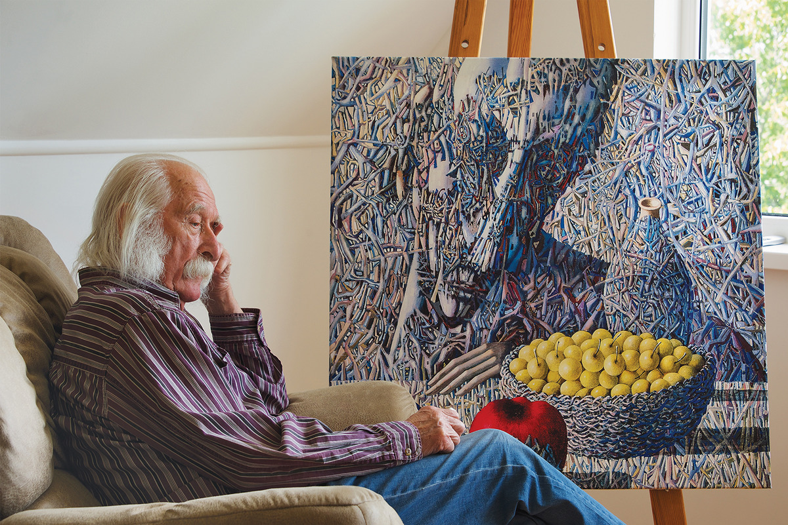

Іван Марчук – народний художник України, лауреат Національної премії України імені Тараса Шевченка, почесний громадянин міст Києва та Тернополя, член Золотої гільдії Римської академії сучасного мистецтва. 2007-о року потрапив до рейтингу “100 найвизначніших геніїв сучасності”, який уклала британська газета The Daily Telegraph.
Народився художник 12 травня 1936 року в селі Москалівка Тернопільської області України, в родині відомого на всю округу ткача. Навчався у Львівському училищі декоративно-прикладного мистецтва імені Івана Труша на відділенні декоративного розпису та на відділенні кераміки Державного інституту прикладного і декоративного мистецтва. У середині 1960-х років Іван Марчук приїхав до Києва і саме тут віднайшов власний шлях у мистецькому просторі, котрий дозволив митцю стверджувати “Я – єсмь!”. Далі жорстке протистояння системі, котра нещадно придушувала все, що не вписувалось у догми соціалістичного реалізму. 12 років еміграції (Австралія, Канада, США). З вересня 2001 року після повернення з еміграції майстер постійно живе і працює в Києві.
Марчук винайшов цілком оригінальну техніку “пльонтанізм” (від слова “пльонтати” ‒ плести, переплітати), котра балансує на межі рукотворного і технологічного і через складність філігранного виконання і трудомісткість практично не підлягає повторенню.
У доробку майстра близько 5000 картин, котрі є на всіх континентах світу. За півстоліття творчої діяльності він провів понад 150 монографічних та 50 колективних виставок. Протягом останніх трьох років полотна художника експонувалися переважно за кордоном (Литва, Німеччина, Польща), виконуючи функцію народної дипломатії: утверджуючи місце України в європейському просторі, а європейського мистецтва у контексті світового.